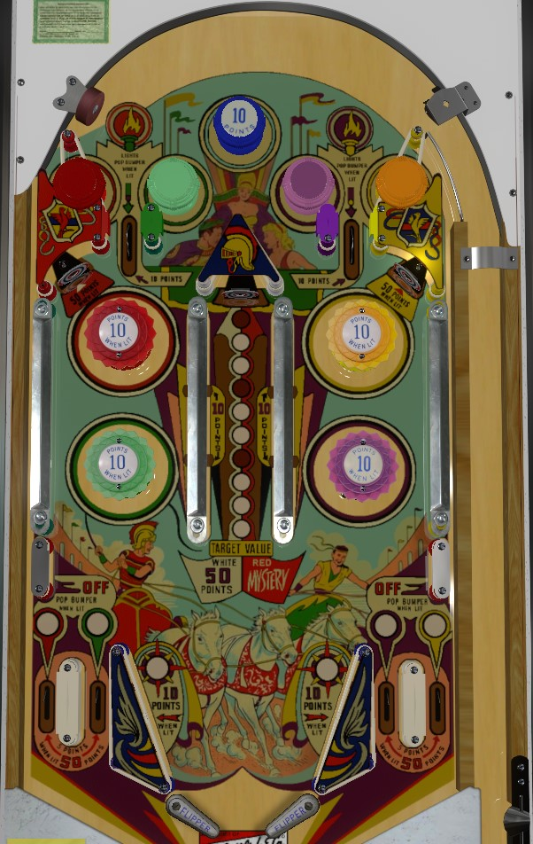

The vast majority of balls on Flying Chariots drain without being able to be flipped. Try to plunge in whatever way is most likely to put the ball on a flipper. With whatever control you do have, try to shoot the center lane, picking off a repeatable 50 points (and occasionally a mystery value worth up to 300 points) from the center standup target. The center target's position at the end of a long, bouncy lane makes it less of a center drain risk than it may look like.
The blue passive bumper at the top of the game scores 10 points. The four passive bumpers just below it are red, green, yellow, and purple, and score 1 point. Every time 1 point is scored anywhere in the game, the lit passive bumper will rotate. There are rollover lanes between the red and green bumpers and between the yellow and purple bumpers. Rolling through a lane when the passive bumper on either side is lit will light that corresponding pop bumper further down the table for 10 points instead of 1.
The four out lanes are red, green, purple, and yellow from left to right. They score 5 points, or 50 when lit. These lanes are lit whenever the corresponding pop bumper is also lit. Rolling through a lit out lane unlights that out lane and the respective bumper. Lit bumpers persist across players, balls, and games, so in a competitive setting, it may to your advantage to drain down a lit out lane to limit how many scoring opportunities are available to your opponent.
Slingshots score 1 point, or 10 when lit. The upper leftmost and upper rightmost standup targets score 5 points, or 50 when lit. These features alternate being lit any time a single point is scored anywhere in the game.
The center of the table is dominated by a long lane with rail slings on each side and a standup target at the end. Switches in the rail slings each score 10 points when hit; the ball likes to rattle around in this lane, so you'll get the 10 points more than once per trip. Hitting the standup target scores and advances the lit value on the playfield upward one step. If the currently lit insert is white, the center standup target scores 50 points. If it is red, as it is in 3 of the 10 positions, it scores a mystery value worth a random multiple of 50 points between 50 and 300. This is the most valuable source of points in the game. The layout of the lane and inability to shoot the center target directly means a shot to the lane almost always zigzags enough that the ball will come to a flipper when it leaves; the risk in making this shot repeatedly comes from missing the lane much too early or too late and banging the ball off of one of the posts that form the bottom of the lane entrance.
Two inch mini flippers are used.
There is no end of ball bonus, but tilt ends game. In a 2-player game, tilt ends the game for the offending player only.
There are no extra balls or playfield specials. Free games can only be earned by exceeding the replay score.